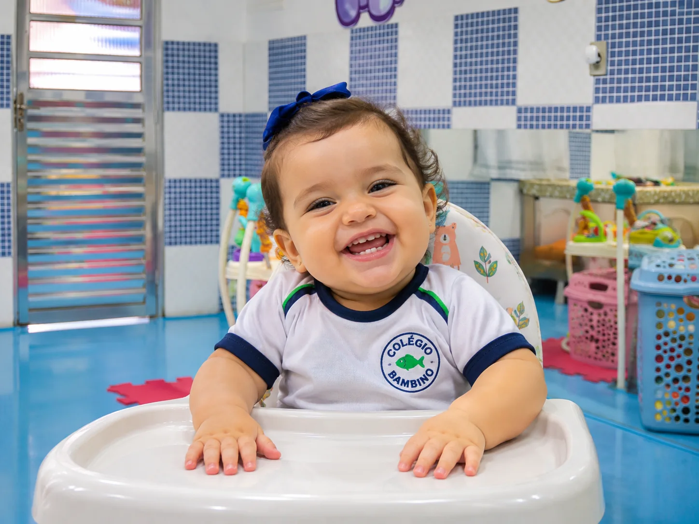

Espaços preparados
Ambientes pensados para os pequenos.
Nos primeiros meses de vida, cada gesto, som e descoberta tem valor. O berçário Bambino reúne cuidados cotidianos e experiências sensoriais em um ambiente pensado para acolher bebês e famílias.

A rotina dos bebês envolve diferentes necessidades, como descanso, alimentação, higiene e exploração. No Bambino, esses momentos fazem parte da atenção dedicada aos primeiros passos do desenvolvimento.
Ambientes pensados para os pequenos.
Atenção às necessidades de cada fase.
Momentos de cuidado e descobertas.
Sons, cores, movimentos, música e interação abrem caminhos para novas percepções. As experiências respeitam o ritmo de cada bebê e valorizam as descobertas do cotidiano.
O contato com sons e ritmos ajuda a ampliar experiências sensoriais.

A presença e o cuidado fazem parte do dia a dia.
Sabemos que a entrada no berçário traz muitas perguntas. Nossa equipe está disponível para conversar sobre adaptação, alimentação, higiene, descanso e a rotina dos pequenos.
Converse com a secretaria